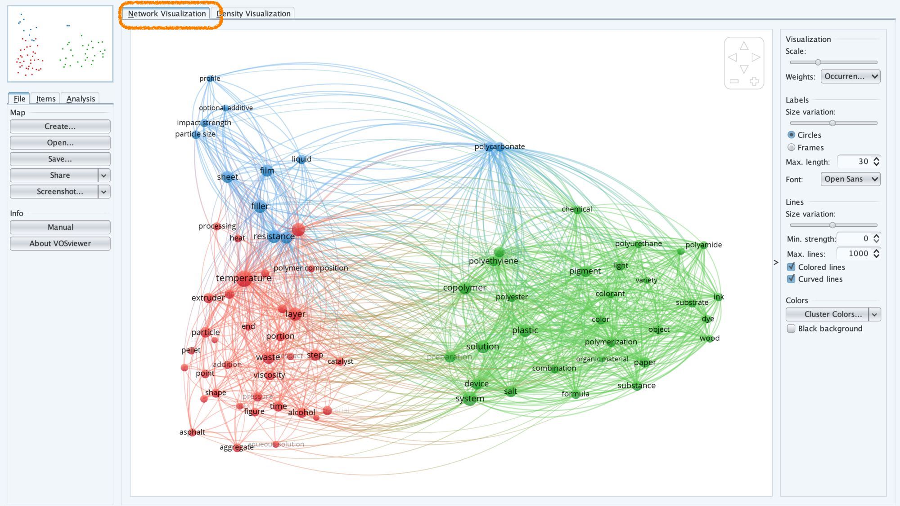

30:00
Flash Course:
Technological watch and prospective
Bibliometric Landscapes
July 2, 2025
1.2 Technology Readiness → Levels
Framework developed in the Aeronautical field.

1.3 Technology Readiness → The Valley of Death

1.6 Technology Readiness → Evolution


1.8 Web of science → Scientific & Patent databases


So..

2.2 Bibliometric mapping: Vosviewer
5.7 Results on WoS plateform

6 Scientific Network visualization

Download Vosviewer at https://www.vosviewer.com/
6.9 Network Visualitation

7.10 VOSviewer for Patents

7.15 VOSviewer for Patents


Think Innovation Week 2025